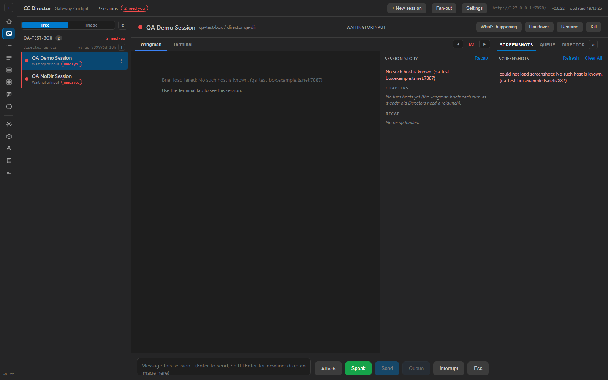
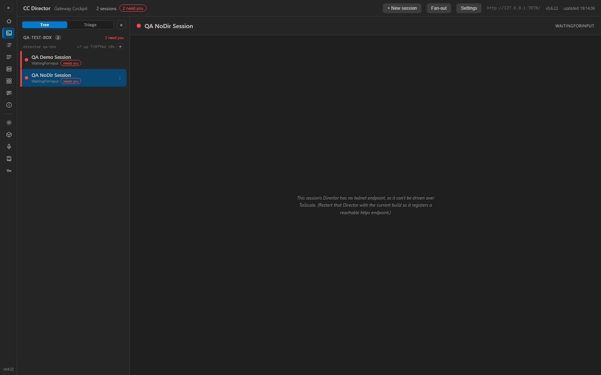

PR #294 · branch issue-199-cockpit-logging · verified independently by the QA Agent.
Verdict: FAIL — acceptance criterion 4 not met
Independent method: built cc-director.sln (Debug, 0 warnings); ran the Cockpit
myself against an isolated CC_DIRECTOR_ROOT and a stub Gateway serving two fake sessions
(one with a Director endpoint, one with an EMPTY endpoint); drove the live Blazor UI with Playwright
(Chromium) with localStorage.cockpit.debug=1 set; read the persisted Cockpit log and the
browser console. I did NOT reuse the developer's binary, log, or screenshots.
| # | Criterion | Expected | Actual (my run) | Result |
|---|---|---|---|---|
| 1 | After exercising the Cockpit, ...\logs\cockpit\cockpit-YYYY-MM-DD-<PID>.log exists and contains INFO lines. |
Dated log file at canonical path with INFO content. | File cockpit-2026-06-10-264472.log created at the canonical path; contains the startup
INFO banner and INFO action lines. Verified live (not the dev's file). |
PASS |
| 2 | A representative action sequence produces one INFO line per action, each carrying sid + director endpoint. |
One INFO line per click; each has sid + dir. |
My clicks mapped 1:1 to lines: action=select-session source=rail sid=... dir=http://qa-test-box.example.ts.net:7887,
action=center-tab ... tab=term, action=new-session-open .... Every line carries sid + dir. |
PASS |
| 3 | Terminal connect attempt + outcome logged server-side; with cockpit.debug=1 the browser console logs ws open/close with code+reason. |
Server: connect attempt line. Browser: gated ws lifecycle. | Server: TerminalPane connect attempt ... wsUrl=... + connect dispatched.
Browser console (debug on): [cockpit-terminal] ws connect attempt, ws error,
ws close ... code 1006 reason (none), ws reconnect scheduled ... attempt N in 1200ms. |
PASS |
| 4 | The blank-terminal failure mode (empty DirectorBase / no connect) is now visible in the persisted log. Proof: the WARNING line. | A TerminalPane empty DirectorBase ... WARNING appears in the persisted log when a session with no endpoint is opened. |
No WARNING is ever produced. I selected the empty-endpoint session and attempted its Terminal tab;
the log shows action=select-session ... sid=qa199-fake-nodir-0002 dir= but no
empty DirectorBase WARNING. Root cause below. |
FAIL |
Cockpit.razor short-circuits a session with an empty TailnetEndpoint to a guard
message before TerminalPane is ever rendered:
// Cockpit.razor (~line 97)
else if (string.IsNullOrWhiteSpace(Selected.TailnetEndpoint))
{
... <div class="right-empty-sub">This session's Director has no tailnet endpoint,
so it can't be driven over Tailscale. ...</div>
}
else // (~line 108) ONLY here does the center/Terminal tab (and TerminalPane) render
{
...
<TerminalPane ... DirectorBase="@Selected.TailnetEndpoint" /> // line 193
}
TerminalPane is consumed in exactly one place (Cockpit.razor line 193), inside the
else branch reached only when TailnetEndpoint is non-empty. The WARNING
guard in TerminalPane.OnAfterRenderAsync (line 46–49) checks
string.IsNullOrEmpty(DirectorBase) — but DirectorBase is bound to that same
non-empty TailnetEndpoint. The two conditions are mutually exclusive, so the WARNING can
never fire through the live UI. The developer's own proof log
(docs/cencon/proof/issue-199/cockpit-actions.log) contains no WARNING line either — the
criterion was claimed but never demonstrated.
tailnetEndpoint.cockpit-*.log.TerminalPane empty DirectorBase for sid=... (rowState=...) WARNING.
Actual: no WARNING; the UI shows the "no tailnet endpoint" guard and TerminalPane is never mounted.Emit the empty-DirectorBase / blank-terminal WARNING from a code path that actually runs for an
endpoint-less session — e.g. log it in Cockpit.razor at the
IsNullOrWhiteSpace(Selected.TailnetEndpoint) guard branch (where the user actually hits the
blank/ungovernable terminal state), or change the render so TerminalPane still mounts and warns. The
WARNING must be observable in the persisted log to satisfy criterion 4.
Live Cockpit rendered, QA Demo Session selected, all composer actions present (rail click → tab → Send/Queue/Interrupt/Esc/Attach/Speak):

Empty-endpoint session shows the guard message instead of a terminal — TerminalPane (and its WARNING) never mount:

Persisted Cockpit log from my run (note: action lines present; no empty DirectorBase WARNING despite opening the endpoint-less session):
2026-06-10 19:12:59.333 INFO [cc-director-cockpit] Cockpit starting (pid=264472) ... 2026-06-10 19:13:24.452 INFO [Cockpit] Cockpit action=select-session source=rail sid=qa199-fake-session-0001 dir=http://qa-test-box.example.ts.net:7887 2026-06-10 19:13:26.537 INFO [Cockpit] Cockpit action=center-tab sid=qa199-fake-session-0001 dir=http://qa-test-box.example.ts.net:7887 tab=term 2026-06-10 19:13:26.560 INFO [TerminalPane] TerminalPane connect attempt sid=qa199-fake-session-0001 dir=http://qa-test-box.example.ts.net:7887 wsUrl=ws://127.0.0.1:7470/sessions/qa199-fake-session-0001/stream 2026-06-10 19:13:26.582 INFO [TerminalPane] TerminalPane connect dispatched sid=qa199-fake-session-0001 wsUrl=... 2026-06-10 19:13:29.619 INFO [Cockpit] Cockpit action=select-session source=rail sid=qa199-fake-nodir-0002 dir= 2026-06-10 19:13:39.721 INFO [Cockpit] Cockpit action=new-session-open sid=qa199-fake-nodir-0002 dir= 2026-06-10 19:14:22.923 INFO [Cockpit] Cockpit action=select-session source=rail sid=qa199-fake-nodir-0002 dir= (no "TerminalPane empty DirectorBase" WARNING anywhere in the file)
Browser console (with cockpit.debug=1) — criterion-3 ws lifecycle, gated by the flag:
[cockpit-terminal] ws connect attempt ws://127.0.0.1:7470/sessions/qa199-fake-session-0001/stream attempt 1 [cockpit-terminal] ws error ... [cockpit-terminal] ws close ... code 1006 reason (none) [cockpit-terminal] ws reconnect scheduled ... attempt 2 in 1200ms
dotnet build cc-director.sln — Build succeeded, 0 Warning(s), 0 Error(s).Criteria 1–3 PASS with independent proof. Criterion 4 FAILS: the WARNING that is the required proof of the blank-terminal failure mode is unreachable. Bouncing to the Developer Agent.